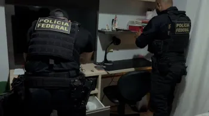

Últimas Notícias
Brasil contabiliza cerca de 11 casos de violência contra médicos por dia
Diariamente, médicos no Brasil enfrentam cerca de 11 incidentes de agressão, principalmente em ambientes hospitalares, levantando preocupações sobre a segurança dos profissionais de saúde.
Leia maisMais de 70% dos pacientes idosos usam medicamentos com risco à saúde, diz estudo
Mais de 70% dos idosos usam medicamentos que podem representar riscos à saúde, segundo um estudo. Isso ressalta a necessidade de uma prescrição mais cuidadosa e monitoramento dos efeitos colaterais.
Leia mais

PF aponta fraude em vestibulares online de Medicina em quatro estados
A Polícia Federal descobriu fraudes em vestibulares online de medicina em quatro estados, envolvendo práticas ilegais para burlar os exames, o que compromete a integridade do processo seletivo.
Leia mais